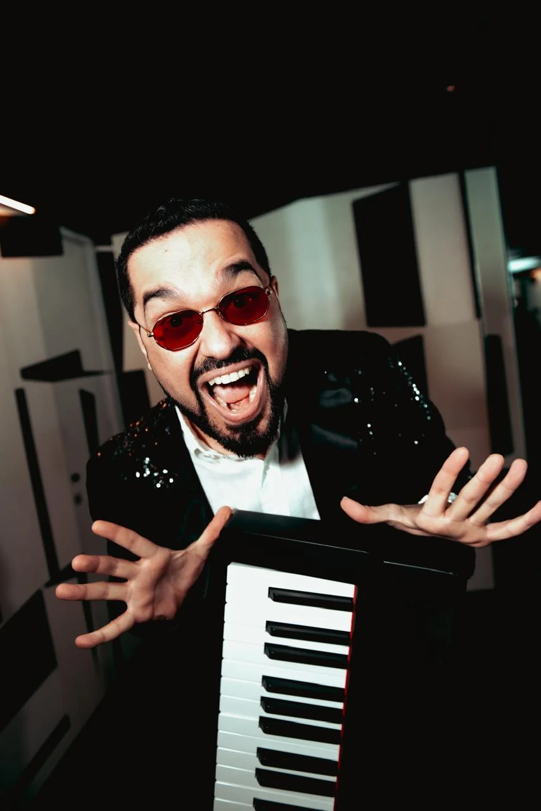

A VIDA PEDE MÚSICA AO VIVO.
RAFAELDIREITO.
Do primeiro acorde
ao último bis.
01 — O ENCONTROPIANO / VOZ / PRESENÇA
TEM COISA
QUE SÓ O AO VIVO
FAZ SENTIR.
Uma voz, muitas possibilidades. A delicadeza de um piano. Um refrão cantado por todo mundo. A energia de um palco inteiro.
Rafael Direito leva sua interpretação a encontros intimistas, celebrações e grandes shows. Cada formato, um jeito de estar junto.
02 — ESCOLHA O CLIMA
QUAL É O SEU
PRÓXIMO SHOW?
Três caminhos.
A mesma presença.
MAIS PERTO. MAIS PRESENTE.01 / 03
Piano
& voz.
A voz em primeiro plano. O piano dando o tom. Um encontro intimista, com espaço para ouvir, sentir e ficar um pouco mais.
RECEPÇÕES · ENCONTROS · CELEBRAÇÕES

EM CENA, POR INTEIRO.
UM PIANO.
UMA VOZ.
MUITO
RAFAEL.
A personalidade também faz parte do repertório.
O PRÓXIMO ENCONTRO PODE SER O SEU.